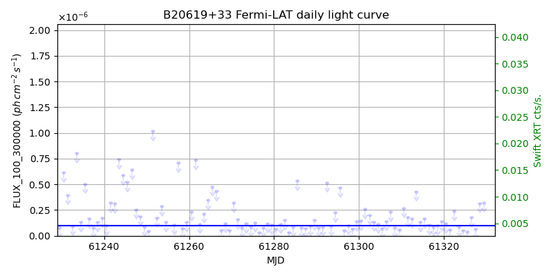
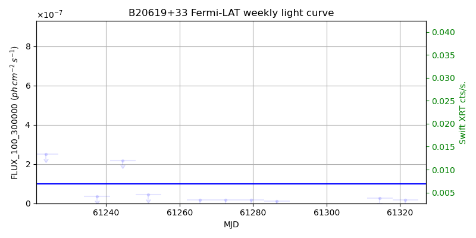
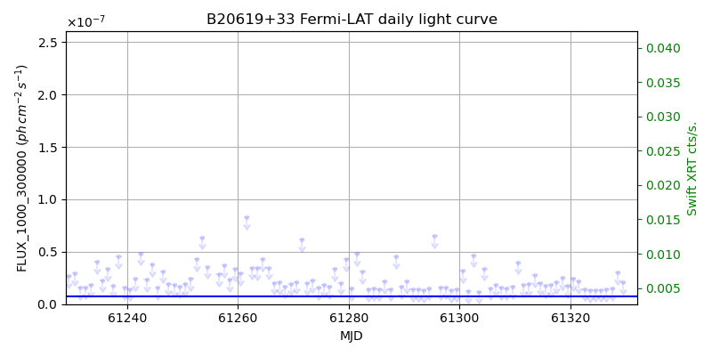
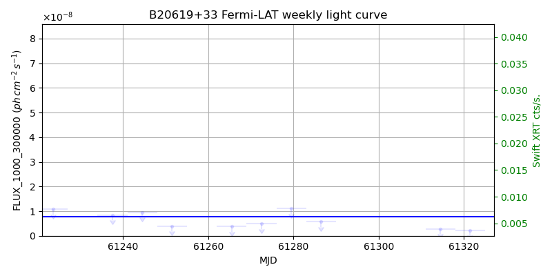

LAT Lightcurve site: https://fermi.gsfc.nasa.gov/ssc/data/access/lat/msl_lc/source/B2_0619p33
Swift site: https://www.swift.psu.edu/monitoring/source.php?source=B20619+33
NED: Query
Time of last update of this page: UT: 2026-10-17 15:17 (MJD: 61330.637)
| Property | Value |
|---|---|
| R.A. | 6:22:52.32 |
| Dec. | 33:26:09.6 |
| z | 1.062 |
| 3FGL SpectrumType | LogParabola |
| 3FGL PL Index | |
| 3FGL Flux_100_300000 | 9.92e-08 1 / (s cm2) |
| 3FGL Flux_1000_300000 | 7.63e-09 1 / (s cm2) |
| 3FGL Flux >200 GeV | 8.46e-12 1 / (s cm2) |
| 3FGL Extrap. Crab >200 GeV | 0.04 |
| 3FGL Flux After EBL Absorption >200GeV | 9.86e-14 1 / (s cm2) |
| 3FGL EBL Crab Fraction >200GeV | 0.00 |

| MJD | dMJD | Flux | dFlux | Frac3FGL | FracCrab>200GeV | EBLFracCrab>200GeV |
|---|---|---|---|---|---|---|
| 61325.50 | 0.50 | 3.61e-08 | 0.00e+00 | 0.00 | 0.00 | 0.00 |
| 61326.50 | 0.50 | 1.78e-07 | 0.00e+00 | 0.00 | 0.00 | 0.00 |
| 61327.50 | 0.50 | 6.54e-08 | 0.00e+00 | 0.00 | 0.00 | 0.00 |
| 61328.50 | 0.50 | 3.16e-07 | 0.00e+00 | 0.00 | 0.00 | 0.00 |
| 61329.50 | 0.50 | 3.21e-07 | 0.00e+00 | 0.00 | 0.00 | 0.00 |

| MJD | dMJD | Flux | dFlux | Frac3FGL | FracCrab>200GeV | EBLFracCrab>200GeV |
|---|---|---|---|---|---|---|
| 61272.50 | 3.50 | 1.84e-08 | 0.00e+00 | 0.00 | 0.00 | 0.00 |
| 61279.50 | 3.50 | 1.85e-08 | 0.00e+00 | 0.00 | 0.00 | 0.00 |
| 61286.50 | 3.50 | 1.26e-08 | 0.00e+00 | 0.00 | 0.00 | 0.00 |
| 61314.50 | 3.50 | 2.68e-08 | 0.00e+00 | 0.00 | 0.00 | 0.00 |
| 61321.50 | 3.50 | 1.64e-08 | 0.00e+00 | 0.00 | 0.00 | 0.00 |

| MJD | dMJD | Flux | dFlux | Frac3FGL | FracCrab>200GeV | EBLFracCrab>200GeV |
|---|---|---|---|---|---|---|
| 61325.50 | 0.50 | 1.37e-08 | 0.00e+00 | 0.00 | 0.00 | 0.00 |
| 61326.50 | 0.50 | 1.39e-08 | 0.00e+00 | 0.00 | 0.00 | 0.00 |
| 61327.50 | 0.50 | 1.47e-08 | 0.00e+00 | 0.00 | 0.00 | 0.00 |
| 61328.50 | 0.50 | 3.04e-08 | 0.00e+00 | 0.00 | 0.00 | 0.00 |
| 61329.50 | 0.50 | 2.07e-08 | 0.00e+00 | 0.00 | 0.00 | 0.00 |

| MJD | dMJD | Flux | dFlux | Frac3FGL | FracCrab>200GeV | EBLFracCrab>200GeV |
|---|---|---|---|---|---|---|
| 61272.50 | 3.50 | 4.91e-09 | 0.00e+00 | 0.00 | 0.00 | 0.00 |
| 61279.50 | 3.50 | 1.11e-08 | 0.00e+00 | 0.00 | 0.00 | 0.00 |
| 61286.50 | 3.50 | 5.75e-09 | 0.00e+00 | 0.00 | 0.00 | 0.00 |
| 61314.50 | 3.50 | 2.85e-09 | 0.00e+00 | 0.00 | 0.00 | 0.00 |
| 61321.50 | 3.50 | 2.23e-09 | 0.00e+00 | 0.00 | 0.00 | 0.00 |
--------------------------------------------------------- Using user-supplied coords: 6:22:52.32 33:26:09.6 2000 --------------------------------------------------------- FLWO UT night of: 2026-10-18 Local Sid. @ Midnight: 01:23 Sunset (-15.0) (local, UT): 18:56 01:56 Sunrise (-15.0) (local, UT): 05:22 12:22 Moonrise (local, UT): Moonset (local, UT): 22:59 05:59 Moon phase: 0.47 --------------------------------------------------------- AzTime LSID UT Obj_el Obj_az Mn_el Mn_az Sep. --------------------------------------------------------- 18:56 20:18 01:56 -19.6 25.0 30.5 195.3 166.0 19:26 20:48 02:26 -16.6 30.8 28.5 202.5 165.8 19:56 21:18 02:56 -13.0 36.2 25.9 209.3 165.7 20:26 21:48 03:26 -9.0 41.1 22.6 215.6 165.5 20:56 22:19 03:56 -3.4 45.6 18.8 221.3 165.3 21:26 22:49 04:26 0.6 49.7 14.5 226.6 165.1 21:56 23:19 04:56 5.3 53.5 9.9 231.4 164.9 22:26 23:49 05:26 10.5 57.0 5.0 235.7 164.7 22:56 00:19 05:56 15.9 60.2 0.2 239.8 164.5 23:26 00:49 06:26 21.5 63.1 -5.5 243.5 164.2 23:56 01:19 06:56 27.3 65.8 -11.3 247.0 164.0 00:26 01:49 07:26 33.2 68.3 -17.0 250.4 163.7 00:56 02:19 07:56 39.1 70.6 -22.8 253.6 163.5 01:26 02:49 08:26 45.2 72.7 -28.7 256.7 163.2 01:56 03:19 08:56 51.4 74.6 -34.7 259.8 162.9 02:26 03:49 09:26 57.5 76.4 -40.7 263.0 162.6 02:56 04:20 09:56 63.8 77.8 -46.8 266.4 162.3 03:26 04:50 10:26 70.0 78.6 -52.8 270.1 162.0 03:56 05:20 10:56 76.3 78.4 -58.9 274.3 161.7 04:26 05:50 11:26 82.6 74.2 -64.9 279.6 161.4 04:56 06:20 11:56 88.0 27.1 -70.8 287.0 161.1 05:22 06:46 12:22 85.1 292.3 -75.7 297.1 160.8 --------------------------------------------------------- Dark hours >55 deg.: 3.14 srcstart (UT): 2026-10-18 09:13 srcend (UT): 2026-10-18 12:22